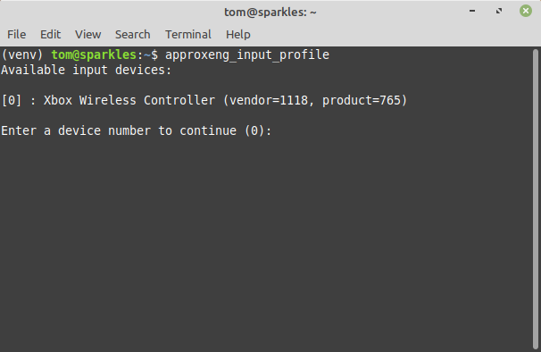
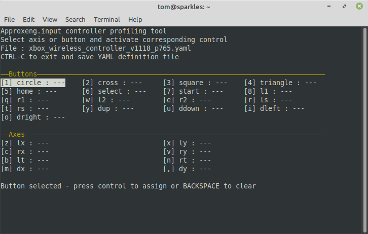
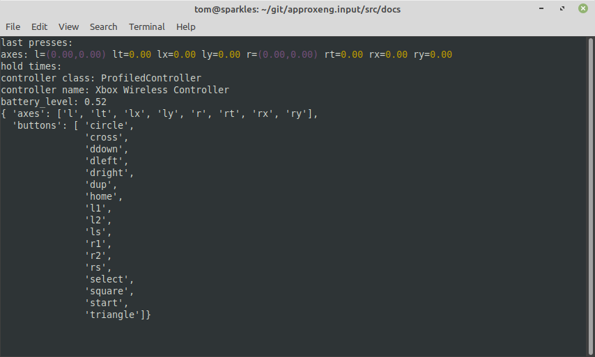

Profiling and Testing Controllers¶
As of version 2.6.0, this library supports YAML based controller definitions. Some of these are bundled in the library itself, but you can also add new ones to ~/.approxeng.input. The library will create this directory if it isn’t already present.
A profile defines a set of mappings based on a vendor and product identifier, and can be used to map a simple controller which satisfies the following:
The controller corresponds to a single device in /dev/input. Most controllers do, it’s only really controllers with a lot of additional axes such as motion sensors which use multiple nodes - if you have one of these controllers and it’s not supported already you’ll need to write a custom class, which is a more involved process.
The controller doesn’t have, or you don’t care about, extra facilities such as LEDs.
The controller is PS3-like, and has a similar or roughly compatible layout. It doesn’t have to be identical, but the profiling tool will attempt to find those controls and won’t allow for others.
This means you couldn’t sensible profile the DualShock4 controller, as it has an RGB LED, trackpad, motion sensors etc. You can, however, profile the rock candy, xbox or similar controllers as they’re much simpler devices (both of these are actually already profiled though).
A profile in your home directory will override anything in the library. This means that if your controller is supported but is giving you incorrect mappings, you can fix that yourself. This can happen because of different bluetooth or kernel versions on the computer side, or from minor hardware revisions the manufacturer hasn’t bothered to document on the controller side!
Profiling¶
To run the profiler, you need to have already installed this library, and have it accessible from your current Python. If you’ve done that, either globally or in an active virtual environment, you should be able to launch the profiler by pairing or otherwise connecting your controller, then typing approxeng_input_profile in your shell. This should give you a list of available controllers, select the one you want to profile by typing the corresponding number:
Selecting a device here brings up the interactive profiling interface:
Within this interface you can press keys to jump to each control in turn, then manipulate the control on the controller that you want to map to that control in the software.
For buttons, just press the button. If you’ve got a mapping you don’t want, navigate to it and hit the backspace key on your keyboard to remove it.
For analogue axes (lx, ly, rx, ry, lt, rt), select the axis and then move the stick or trigger on your controller to its full extent, trying to keep other movements to a minimum. The profiler will look for the axis with the most movement, so it’s not a problem if you move the stick sideways a bit when trying to set the Y axis, for example.
For d-pad buttons, you will want to try mapping them as buttons, but don’t be surprised if that doesn’t work. If you don’t get a response when you try to set e.g. dleft as a button, you need to use the dx and dy axes instead. These are configured to look for digital axes and won’t respond until you press both buttons on that axis, i.e. for dx you need to press the left and right d-pad buttons.
The analogue triggers may or may not exist on your controller. Similarly, they may or may not act as buttons - don’t worry if you don’t have a button for an analogue trigger, as long as the button mapping is left unset the library will create a virtual button which is triggered at 20% activation of the analogue axis.
All analogue axes (sticks and triggers) should be at their minimum value when left or down (for sticks) or unpressed (for triggers). You can see the current value of the most moved axis when you’re doing the mapping - if this is the wrong way around (and it often is for vertical analogue axes) you can press SPACE to toggle inversion of the axis.
If for some reason you need to disable an axis, perhaps because you accidentally mapped something that shouldn’t have been mapped, you can select that axis and use BACKSPACE to lock it. Unlock it by selecting it and hitting BACKSPACE again.
When you’ve finished mapping as many controls as possible, use CTRL-C to exit. This will quit the profiling tool and save the results in the file shown in the GUI. You can do two things with this file:
You can copy it into ~/.approxeng.input/, this will make it immediately available to your code
You can create an issue on github and attach it if you think it would be useful to have it included for other users (this would be much appreciated, please include as much information as possible about the kind of controller the mapping represents, any notes on configuring it etc.)
Testing¶
If you’ve copied the YAML file into ~/.approxeng.input/ any future uses of the library should pick it up. You can test this by running the approxeng_input_show_controls tool from the command line, this will hopefully then show your newly configured controller and allow you to check everything’s working as you expect.
